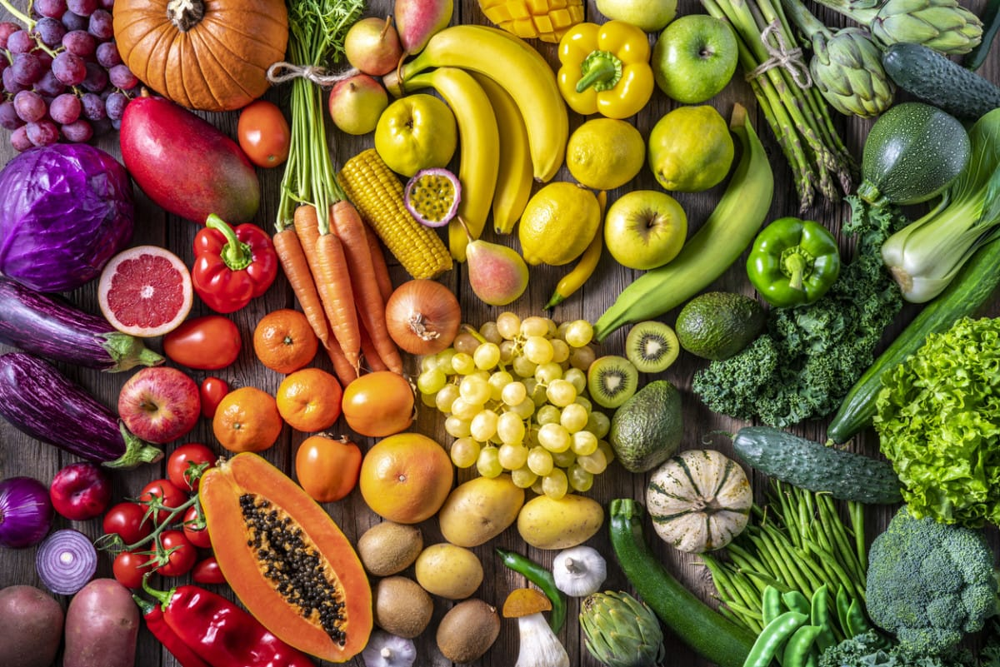

About Us

Why organic things are special ?
Fresh and healthy organic groceries provide a nourishing foundation for a balanced diet and sustainable lifestyle. These products, cultivated without synthetic pesticides or fertilizers, offer consumers a reassurance of minimal chemical exposure and heightened nutritional value. From vibrant fruits and vegetables bursting with flavor to wholesome grains and proteins, organic groceries not only support individual health but also contribute to environmental conservation and support local farmers committed to sustainable agricultural practices. Choosing organic options fosters a connection to the earth and promotes wellness while embodying a commitment to a healthier planet.